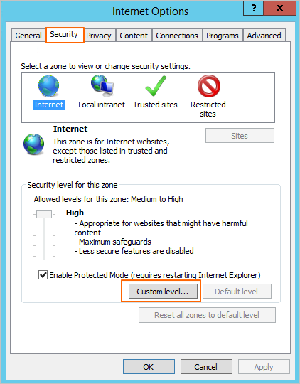
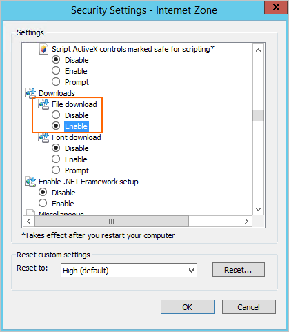

The security level of Internet Explorer 11 on the Windows Server is high. You need to lower the security level of Internet Explorer 11 before downloading the client software package. The following uses Window Server 12 as an example to describe how to change the security level of Internet Explorer 11.

